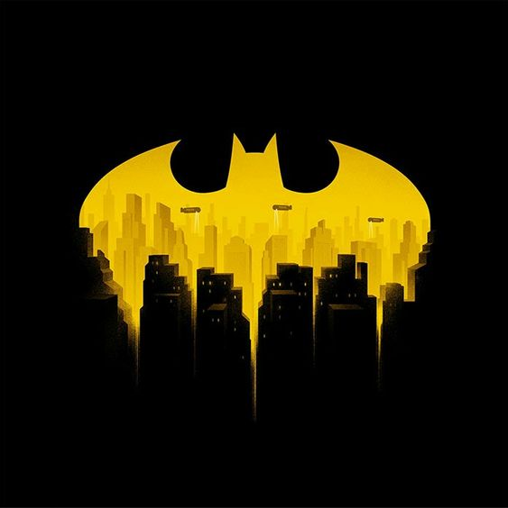
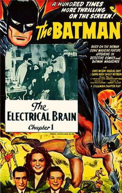
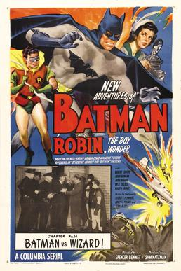
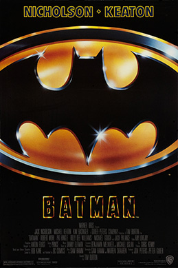
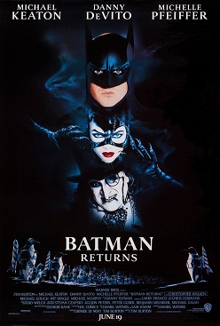
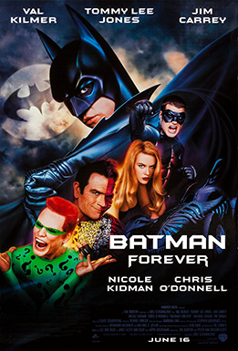
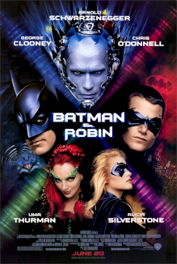

FILMS
Film adaptations of Batman comics appeared in the 1940s,
these are television series and films in the UK and the USA,
which remain popular to this day


Batman
Batman is a 1943 American 15-chapter theatrical serial from Columbia Pictures, produced by Rudolph C. Flothow, directed by Lambert Hillyer, that stars Lewis Wilson as Batman and Douglas Croft as his sidekick Robin.
More

Batman and Robin
New Adventures of Batman and Robin, the Boy Wonder, also known as simply Batman and Robin, is a 15-chapter serial released in 1949 by Columbia Pictures. It is a sequel to the 1943 serial Batman, although with different actors. Robert Lowery played Batman, while Johnny Duncan played Robin.
More
Batman (1966)
Batman (also known as Batman: The Movie) is a 1966 American superhero film directed by Leslie H. Martinson. Based on the television series, and the first full-length theatrical adaptation of the DC Comics character of the same name, the film stars Adam West as Batman and Burt Ward as Robin.
MoreTim Burton and Joel Schumacher series (1989–1997)

Batman (1989)
Batman is a 1989 superhero film based on the DC Comics character of the same name, created by Bob Kane and Bill Finger. Directed by Tim Burton, it is the first installment of Warner Bros.' initial Batman film series.
More

Batman Returns
Batman Returns is a 1992 American superhero film directed by Tim Burton and written by Daniel Waters. Based on the DC Comics character Batman, it is the sequel to Batman (1989) and the second installment in the 1989–1997 Batman series.
More

Batman Forever
Batman Forever is a 1995 American superhero film directed by Joel Schumacher and produced by Tim Burton, based on the DC Comics character Batman by Bob Kane and Bill Finger.
More

Batman and Robin (1997)
Batman & Robin is a 1997 American superhero film based on the DC Comics characters Batman and Robin by Bill Finger and Bob Kane. It is the fourth and final installment of Warner Bros.'s initial Batman film series, a sequel to Batman Forever and the only film in the series made without the involvement of Tim Burton in any capacity.
MoreThe Dark Knight Trilogy (2005–2012)

Batman Begins
Batman Begins is a 2005 superhero film directed by Christopher Nolan and written by Nolan and David S. Goyer. Based on the DC Comics character Batman, it stars Christian Bale as Bruce Wayne / Batman, with Michael Caine, Liam Neeson, Katie Holmes, Gary Oldman, Cillian Murphy, Tom Wilkinson, Rutger Hauer, Ken Watanabe, and Morgan Freeman in supporting roles.
More.jpg)
The Dark Knight
The Dark Knight is a 2008 superhero film directed by Christopher Nolan from a screenplay co-written with his brother Jonathan. Based on the DC Comics superhero Batman, it is the sequel to Batman Begins (2005) and the second installment in The Dark Knight Trilogy.
More
The Dark Knight Rises
The Dark Knight Rises is a 2012 superhero film directed by Christopher Nolan, who co-wrote the screenplay with his brother Jonathan Nolan, and the story with David S. Goyer. Based on the DC Comics character Batman, it is the final installment in Nolan's The Dark Knight trilogy, and the sequel to The Dark Knight (2008).
MoreDC Expanded Universe

Batman v Superman: Dawn of Justice
Batman v Superman: Dawn of Justice is a 2016 American superhero film based on the DC Comics characters Batman and Superman. Distributed by Warner Bros. Pictures, it is a follow-up to the 2013 film Man of Steel and the second film in the DC Extended Universe.
More_poster.png)
"Suicide Squad" (2016)
Suicide Squad is a 2016 American superhero film based on the DC Comics supervillain/anti-hero team of the same name. Produced by Warner Bros. Pictures, RatPac-Dune Entertainment, DC Films, and Atlas Entertainment, and distributed by Warner Bros. Pictures, it is the third installment in the DC Extended Universe
More_poster.jpg)
Justice League (2017)
Justice League is a 2017 American superhero film based on the DC Comics superhero team of the same name. Produced by Warner Bros. Pictures, DC Films, RatPac-Dune Entertainment,[b] Atlas Entertainment, and Cruel and Unusual Films and distributed by Warner Bros. Pictures, it is the fifth installment in the DC Extended Universe
MoreOutside the DC Expanded Universe
_poster.jpg)
"Joker" (2019)
Joker is a 2019 American neo-noir psychological thriller film directed by Todd Phillips, who also co-wrote the screenplay with Scott Silver. The film, based on DC Comics characters, stars Joaquin Phoenix as Joker.
More
Batman v Superman: Dawn of Justice
Batman v Superman: Dawn of Justice is a 2016 American superhero film based on the DC Comics characters Batman and Superman. Distributed by Warner Bros. Pictures, it is a follow-up to the 2013 film Man of Steel and the second film in the DC Extended Universe.
More_poster.jpg)
The Batman (2022)
The Batman is a 2022 American superhero film based on the DC Comics character Batman. Produced by Warner Bros. Pictures, DC Films, 6th & Idaho, and Dylan Clark Productions, and distributed by Warner Bros. Pictures, it is a reboot of the Batman film franchise. The film was directed by Matt Reeves, who wrote the screenplay with Peter Craig.
More